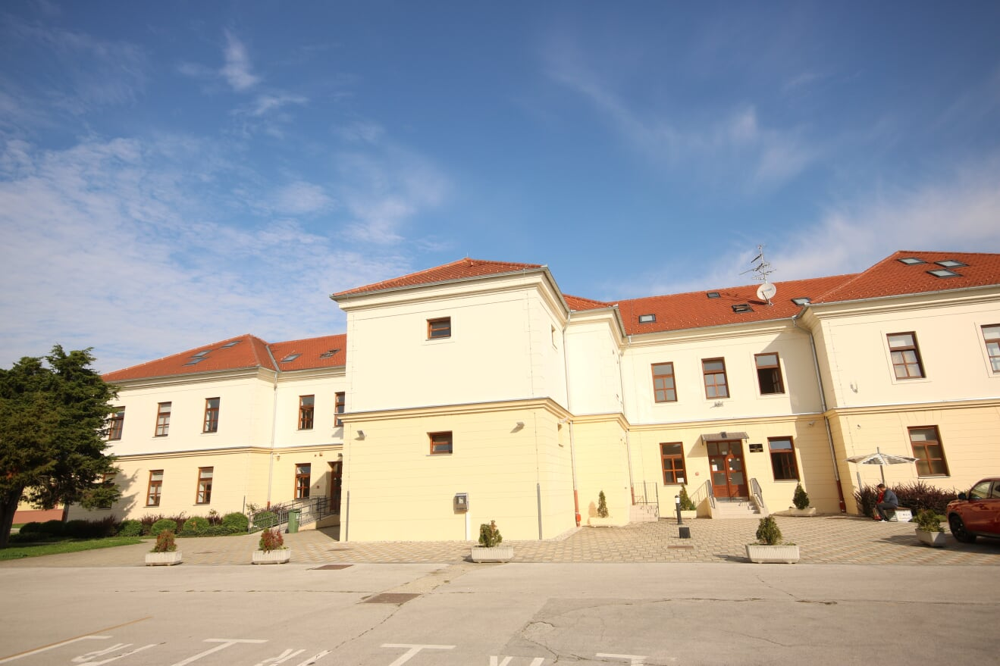

Partneri Projekta
1. MEV – Međimursko veleučilište u Čakovcu SAZNAJ VIŠE
2. RIS Dvorac Rakičan – RIS Dvorac Rakičan SAZNAJ VIŠE
3. Znanstveno - raziskovalno središče Bistra Ptuj – ZRS Bistra Ptuj SAZNAJ VIŠE
4. Razvojna agencija Savinjske regije SAZNAJ VIŠE
5. Gradski muzej Varaždin – Gradski muzej Varaždin SAZNAJ VIŠE
6. Muzej Međimurja Čakovec – Muzejski stručnjaci SAZNAJ VIŠE
7. Muzeji Hrvatskog Zagorja – Muzeji Hrvatskog zagorja SAZNAJ VIŠE
8. Proteus d.o.o. – Turistička agencija Proteus SAZNAJ VIŠE
MEV
 Međimursko veleučilište u Čakovcu je visoko učilište koje predstavlja regionalni centar izvrsnosti visokostručnog i primijenjenog znanstvenog rada koji provodi kvalitetno i učinkovito obrazovanje temeljeno na konceptu cjeloživotnog učenja, odgovornosti za znanje kao javno dobro, mobilnosti i razvoju ljudskih potencijala kao najveće vrijednosti društva. Aktivnom suradnjom s gospodarstvom, partnerstvima za razvoj zajednice, uključenošću u Europski prostor visokog obrazovanja i Europski istraživački prostor te visokom razinom organiziranosti Veleučilište će pokazati svoju javnu odgovornost i doprinijeti razvoju društva znanja. Međimursko veleučilište u Čakovcu bit će institucija koja potiče mobilnost i razvijanje poduzetničke energije i izražavanje talenta svakog pojedinca (nastavnika, asistenta, administratora i studenta). Visoka fleksibilnost studija i uvođenje novih programa u cilju izobrazbe visokostručnih profila potrebnih gospodarstvu u okruženju ostat će jednom od temeljnih značajki Međimurskog veleučilišta u Čakovcu.
RIS Dvorac Rakičan
 RIS Dvorac Rakičan je regionalna javna ustanova osnovana od strane Općine Murska Sobota i Udruge za tehničku kulturu Slovenije.
RIS djeluje u području turizma, kulture, istraživanja, obrazovanja i međugeneracijske suradnje. Jedan od glavnih ciljeva organizacije je očuvanje, promicanje i razvoj kulturne i prirodne baštine, tako je i RIS upravitelj ljetnikovca i pripadajućeg parka, oba su pod spomeničkom zaštitom. RIS je organizator brojnih domaćih i međunarodnih skupova, konferencija o zdravlju, zdravoj prehrani, tjelovježbi, zdravom načinu života, ekologiji, ekološkoj svijesti, te onih sa psihološkim i društvenim sadržajem. Sastavni dio RIS-a je i konjički centar Dvorac Rakičan, gdje je smješteno 15 konja. RIS također upravlja i galerijom. RIS za i u interesu Gradske općine Murska Sobota priprema niz europskih projekata s time da Gradska općina Murska Sobota pruža potrebnu financijsku potporu. Njihovo osoblje je visoko kvalificirano i ima brojna iskustva u sljedećim područjima: -upravljanje projektima i financijsko upravljanje, -znanje stranih jezika, -organizacija različitih događaja (međunarodne konferencije, programi razmjene mladih) -promocija (promidžbeni materijal, suradnja s medijima) -priprema i provedba različitih istraživačkih i razvojnih programa, -priprema različitih općih i specijaliziranih stručnih mišljenja. RIS također organizira razne događaje i s više od 10.000 posjetitelja dnevno.
RIS Dvorac Rakičan je regionalna javna ustanova osnovana od strane Općine Murska Sobota i Udruge za tehničku kulturu Slovenije.
RIS djeluje u području turizma, kulture, istraživanja, obrazovanja i međugeneracijske suradnje. Jedan od glavnih ciljeva organizacije je očuvanje, promicanje i razvoj kulturne i prirodne baštine, tako je i RIS upravitelj ljetnikovca i pripadajućeg parka, oba su pod spomeničkom zaštitom. RIS je organizator brojnih domaćih i međunarodnih skupova, konferencija o zdravlju, zdravoj prehrani, tjelovježbi, zdravom načinu života, ekologiji, ekološkoj svijesti, te onih sa psihološkim i društvenim sadržajem. Sastavni dio RIS-a je i konjički centar Dvorac Rakičan, gdje je smješteno 15 konja. RIS također upravlja i galerijom. RIS za i u interesu Gradske općine Murska Sobota priprema niz europskih projekata s time da Gradska općina Murska Sobota pruža potrebnu financijsku potporu. Njihovo osoblje je visoko kvalificirano i ima brojna iskustva u sljedećim područjima: -upravljanje projektima i financijsko upravljanje, -znanje stranih jezika, -organizacija različitih događaja (međunarodne konferencije, programi razmjene mladih) -promocija (promidžbeni materijal, suradnja s medijima) -priprema i provedba različitih istraživačkih i razvojnih programa, -priprema različitih općih i specijaliziranih stručnih mišljenja. RIS također organizira razne događaje i s više od 10.000 posjetitelja dnevno.
Znanstveno-raziskovalno središče Bistra Ptuj
ZRS Bistra Ptuj djeluje kao regionalna razvojna agencija za razvoj i kao istraživački centar te je snažno uključena u projekte EU.
Glavne aktivnosti su: promicanje sveobuhvatnog i lokalno orijentiranog održivog razvoja podregije, koja se sastoji od 16 općina,
uspostavljanje i održavanje veze između tvrtki, istraživačkih institucija i vlasti, prijenos, stvaranje i širenje znanja i stvaranje mogućnosti za više obrazovanih kadrova u regiji.
Organizacija zapošljava 15 visokoobrazovanih ljudi, uključujući i 5 doktora i 1 magistra znanosti. Svi su obučeni i iskusni u radu na projektima.
Razvojna agencija Savinjske regije
Osnovna uloga i zadaća RASR je poticanje razvoja Savinjske regije. Agencija je bila osnovana od strane 31 općine u lipnju 2010. U sudjelovanju sa svim regionalnim akterima razvoja, agencija se usredotočuje na prepoznavanje i iskorištavanje razvojnih potencijala u regiji. Zadaća RASR je usklađivanje i uključivanje 31 općine, u skrbi za uravnoteženi regionalni razvoj. RASR ima status regionalnog razvoja subjekta na nacionalnoj razini i ima važan utjecaj na regionalnu politiku preko svojih osnivača, 31 općine. Utječemo na područje regionalne politike s poticanjem regionalnog razvoja. RASR ima status za poticanje regionalnog razvoja, dodijeljen od strane Ministarstva za gospodarski razvoj i tehnologiju 2010. godine. Glavne djelatnosti organizacije su: planiranje rada, priprema stručnih temelja za provođenje regionalnih projekata, priprema uloga za financiranje razvojnih zadaća, priprema izvještaja, sudjelovanje s općinama u regiji u prepoznavanju i ostvarivanju zajedničkih razvojnih zadaća, sudjelovanje sa svim nacionalnim subjektima i regionalnim agencijama, provođenje regijskih shema stipendiranja, promocija regije, kao i regionalne aktivnosti, programi i projekti. RASR vodi brigu i o Regionalnoj garancijskoj shemi i Regionalnoj stipendijskoj shemi. Projekti: Poduzetno u svijet poduzetništva 2015. (sufinanciran iz EES). Projekt Jugozapadna Europa (ProgramskaPolyinvest) – PP.
Gradski muzej Varaždin
Gradski muzej Varaždin osnovan je 1925. godine u Starom gradu, gotičko-renesansnoj utvrdi i od tada neprekinuto djeluje. Utvrda je posljednji put obnovljena 1989. godine. Stalni postav u Starom gradu sadrži brojne ambijentalno oblikovane stilske sobe od renesanse do secesije, predmete iz zbirki oružja, kamenih spomenika, ostavštine Vatroslava Jagića i Ivana Kukuljevića Sakcinskog, izlošcima što svjedoče o prošlosti grada i utvrde, obrtu i trgovini te ljekarništvu. S tim postavom Gradski muzej Varaždin bio je 1994. godine kandidat za Nagradu europskoga muzeja godine - prvi među hrvatskim muzejima. U travnju 2007. godine stalni postav Odjela dopunjen je muzeološkom cjelinom iz zbirki keramike, stakla i satova, a 2014. uređen je postav s prikazom mode i odijevanja u prošlosti. Danas GMV ima gotovo 200.000 predmeta svrstanih u 54 zbirke, a o njima brine 32 djelatnika.
Muzej Međimurja Čakovec
Muzejski stručnjaci (arheolog, povjesničar, povjesničar umjetnosti, etnolog) imaju veliko iskustvo u istraživanju povijesti putem stručne literature, istraživanjem u povijesnim arhivima, terenskim obilascima lokaliteta, intervjuiranjem pojedinaca te za razliku od običnih istraživača, kolekcionara i povjesničara vični su i sposobni svoje znanje i spoznaje na kreativan način pretočiti u zanimljivu izložbu ili stalan postav muzeja i na taj način znanje prenijeti na posjetitelje. Pisanje stručnih i znanstvenih radova kao i kataloga muzejskih izložbi, vodiča stalnim postavom ili knjiga također je uredovnom poslu muzejskih stručnjaka. Imaju i veliko iskustvo u komuniciranju s posjetiteljima, predavanjima, vodstvima i općenito usmenom prijenosu znanja, kao i u osmišljavanju i provedbi edukativnih i kreativnih radionica za sve dobne skupine posjetitelja. U sklopu redovnog muzejskog rada stručni tim kustosa napisao je scenarije za dva muzejska kratkometražna filma - reportažni i dokumentarni. Sudjelovali su 2012. u povijesno-kulturno-turističkoj manifestaciji „Ana Katarina Zrinski“ Međimurskog veleučilišta kojoj je glavni cilj bio uprizorenje povijesne osobe Ane Katarine Zrinski uautentičnom okruženju Starog grada Zrinskih u Čakovcu. U sklopu projekta „pHisCulture“ koji se provodio unutar OP SI-HR 2007-2013muzejski kustosi rekonstruirali su period tzv. Fin de siècla, tj. kraja 19. i početka 20. stoljeća te uz otvorenje izložbe pod nazivom„Večernji soirée“.
Muzeji Hrvatskog Zagorja
Muzeji Hrvatskog zagorja objedinjuju pet muzejsko-galerijskih ustanova na području Hrvatskog zagorja. Područje njihovog djelovanja je zaštita prezentacija i interpretacija kulturne i prirodne baštine. U tu svrhu muzeji osim što rade na zaštiti nepokretne kulturne baštine, ulažu veliki trud i u njezinu prezentacijukroz stalne postave, izložbe, kataloge i druge tiskovine, ali i putem multimedije. U projektu sudjeluju dvije ustrojbene jedinice iz sastava Muzeja: Dvor Veliki Tabor i Muzej seljačkih buna. Oba se nalaze u zgradama koje su spomenici kulture. Dvor Veliki Tabor nedavno je izradio scenarij postava uključuući dobre muzeološke prakse kao i smjernice Strategije očuvanja i gospodarskog korištenja kulturne baštine Republike Hrvatske za razdoblje 2010.-2013 i Strategije Ministarstva kulture RH 2012-2014. Muzejima iskustva u različitim projektima digitalizacije građe te izrade mulitmedijalnih aplikacija koje se koriste u stalnom postavu. Muzej je za svoj 3D mapping Gubec teatar dobio i nagradu Heritage in Motion u kategoriji film i video. Djelatnici obje muzejske jedinice imaju bogato iskustvo u kulturnom turizmu i realizaciji različitih događanja oživljene povijesti, organizaciji stručnih skupova i kulturnih događanja.
Proteus d.o.o.
Turistička agencija Proteus je sa zaštitnim znakom Slovenia Explorer vodeći ponuđač dnevnih izleta po Sloveniji za strane turiste. Pored obaveze izvrsnosti provedbe i odnosa sa strankama i partnerima, za uspjeh agencije ključan je inovativni pristup organizaciji i promociji, što agenciju uvijek nanovo čini konkurentnom. Važnost agencije je da pored glavnih slovenskih turističkih mjesta u svoju ponudu uključuje sve slovenske regije, jer u svojoj ponudi imaju čak 14 različitih rasprodanih izleta koji se ostvaruju svaki tjedan. U ponudi imaju i inovativni proizvod zvan Slovenia Incognita. Radi se o izletu u nepoznato, gdje se strankama ne govori kamo ih se vodi. Za promociju svojih izleta i Slovenije nacrtan je ilustrirani zemljovid sa slovenskim znamenitostima, što se je kod stranih gostiju pokazalo kao izniman uspjeh. TA Proteus uspješno prodaje svoje izlete preko vlastite mrežne stranice, a s tiskanim promotivnim materijalom prisutna je u svim ljubljanskim hotelima i ostalim smještajnim kapacitetima. Pri organizaciji i prodaji izleta odlično surađuje s Turizmom Ljubljana te s brojnim stranim agencijama po Europi i drugdje u svijetu. Svoje izlete uspješno prodaje i na globalnim mrežnim portalima kao što su Viator i Tripadvisor. Pored dobre organizacijske ekipe TA Proteus ima ekipu odličnih turističkih vodiča, koje redovito dodatno osposobljava. Vodiči vode u većini glavnih svjetskih jezika, a pored toga ima i dobru skupinu povremenih suradnika za ostale strane jezike.